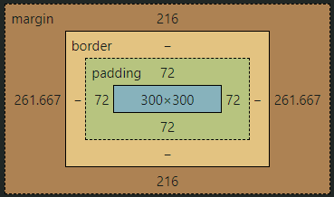

Box model for the circle above that has margin, padding, and the center.
The margin is at 12 rem to not have the circle at the very top of the page.
Without it, the site map circle would not be in the center of the page.
The circle has no border since it would collide with the radius to make the circle.
The padding is at 4 rem to allow the text to be in the middle and be center aligned.
Without the padding the different types of text would be spread and on one side of the circle.
The center that shows the 300x300 is the width and height of the circle and they must be
the same in order for it to hold a circular shape.